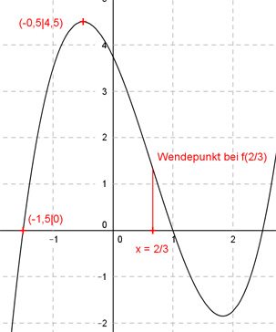

Aufgabe 44 Der Graph einer ganzrationalen Funktion 3. Grades schneidet die x-Achse bei -1,5, hat bei (-0,5|4,5) einen Hochpunkt und an der Stelle x = 2/3 einen Wendepunkt. Wie lautet seine Funktionsgleichung?  Allgemeine Form einer ganzrationalen Funktion 3. Grades: f(x) = ax3 + bx2 + cx + d f’(x) = 3ax2 + 2bx + c f’’(x) = 6ax + 2b 4 Bedingungen: 1. Schneidet die x-Achse bei -1,5 bedeutet: f(-1,5) = 0 --> a * (-1,5)3 + b * (-1,5)2 + c * (-1,5) + d = 0 --> -3,375a + 2,25b - 1,5c + d = 0 I 2. Hat bei (-0,5|4,5) einen Hochpunkt bedeutet zum einen: f(-0,5) = 4,5 --> a * (-0,5)3 + b * (-0,5)2 + c * (-0,5) + d = 0 --> - 0,125a + 0,25b - 0,5c + d = 4,5 II 3. Hat bei (-0,5|4,5) einen Hochpunkt bedeutet zum anderen: f’(-0,5) = 0 --> 3a * (-0,5)2 + 2b * (-0,5) + c = 0 --> 0,75a - b + c = 0 III 4. Hat bei x = 2/3 einen Wendepunkt bedeutet: f’’(2/3) = 0 --> 6a * 2/3 + 2b = 0 --> 4a + 2b = 0 IV II * (-1) + I 0,125a - 0,25b + 0,5c - d = -4,5 -3,375a + 2,25b - 1,5c + d = 0 ---------------------------------- -3,25a + 2b - c = -4,5 V III + V 0,75a - b + c = 0 -3,25a + 2b - c = -4,5 ----------------------- -2,5a + b = -4,5 VI IV + VI * (-2) 4a + 2b = 0 5a - 2b = 9 ------------ 9a = 9 |:9 a = 1 a = 1 in IV eingesetzt: 4 * 1 + 2b = 0 4 + 2b = 0 |-4 2b = -4 |:2 b = -2 a = 1 und b = -2 in III eingesetzt. 0,75 * 1 - (-2) + c = 0 2,75 + c = 0 |-2,75 c = -2,75 a = 1 und b = -2 und c = -2,75 in I eingesetzt: -3,375 * 1 + 2,25 * (-2) - 1,5 * (-2,75) + d = 0 - 3,375 - 4,5 + 4,125 + d = 0 - 3,75 + d = 0 |+3,75 d = 3,75 Gesuchte Funktionsgleichung: f(x) = x3 - 2x2 - 2,75x + 3,75